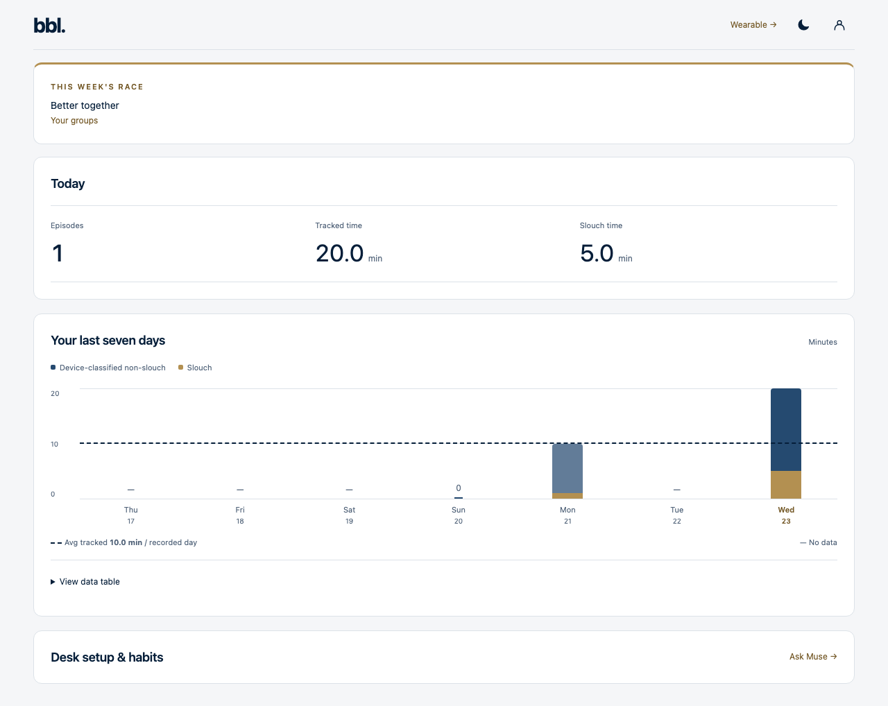
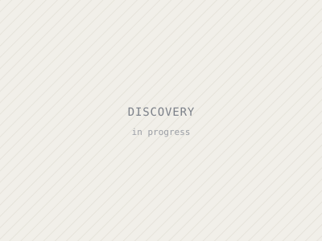

Projects
Things I've built
Research, personal builds and a hackathon. Each write-up covers the problem, how I approached it, and what actually happened, including what didn't work. Newest first.
-
01
A logic block that spans two layers
Extended VTR and OpenFPGA so one FPGA logic block can split its ten LUTs across two stacked dies, then took it through an ASIC flow and fixed a port-width bug in the LaZagna 3D FPGA framework.

-
02
pose. — a posture-tracking wearable
ESP32 wearable that detects slouching on-device and syncs over BLE to a web dashboard. I owned the hardware and firmware. Best Use of TigerData at HackGT 13.

-
03
A logic simulator on the GPU
CUDA gate-level simulator running a 20,170-gate CPU netlist. A persistent-kernel rewrite took it from 2.5× slower than the CPU to 2× faster.

-
04
A 16-bit CPU, from ISA to FPGA
Five-stage pipelined RISC CPU with a custom 12-instruction ISA, forwarding, stalls and branch flushing, running Fibonacci live on a Tang Nano 9K.

-
—
Discovery Project title
One or two sentences: what you built and what came out of it.
